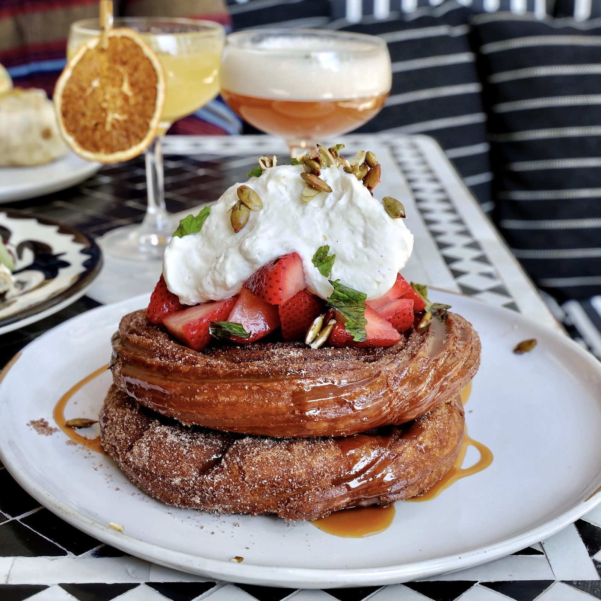

Churro pancakes
Stacked with strawberries and whipped cream. A rich brunch favorite.
Restaurant · River Walk, San Antonio
Index of the menu
Churro pancakes, elote street corn and short rib quesadilla, near the San Antonio River.

What to order
Dishes worth ordering by name.
Stacked with strawberries and whipped cream. A rich brunch favorite.

Plated with a wedge of lime and fresh herbs on top. Flavorful, seasoned, sizable.

Breakfast and brunch, with short rib quesadilla and chicken enchiladas on the table.


4.7 / 5 · 10621 Google reviews
1Everything was amazing. We found this place while walking along the river walk as tourists and this place always had people. On our last day in San Antonio we decided to come here for brunch. Exterior and interior had an upscale artisan air. Food all looked very well presented. We ordered the short rib quesadilla, the chicken enchiladas, and the churro pancakes. We didn’t realize what we were getting ourselves into. Short rib quesadilla: 10/10.
2While walking by, my husband and I spontaneously chose to have dinner at Domingo’s, and what a great choice that turned out to be. Ashley was our server and she was outstanding; great personality, wonderful service and she even took the time to give us a few recommendations of what to do while in town. The food was delicious. I highly recommend the Elote Street Corn as an appetizer!
3We dined at Domingo in San Antonio five days in a row, mostly for breakfast, and every visit was exceptional. The food was consistently delicious, and the service was outstanding. Malik was our server several times, and he truly went above and beyond. He was warm, friendly, and engaging, making great conversation while ensuring every meal was complete and that we had everything we needed.
About
South Texas cuisine with a Texas twist. Mexican-inspired dishes, modern and creative, with quality ingredients and fresh flavors.
Friendly, attentive servers. A room that suits a spontaneous dinner or a week of breakfasts.

Visit
123 N St Mary's St, San Antonio, TX 78205
Some tables sit by the river. Call ahead with questions about a table.